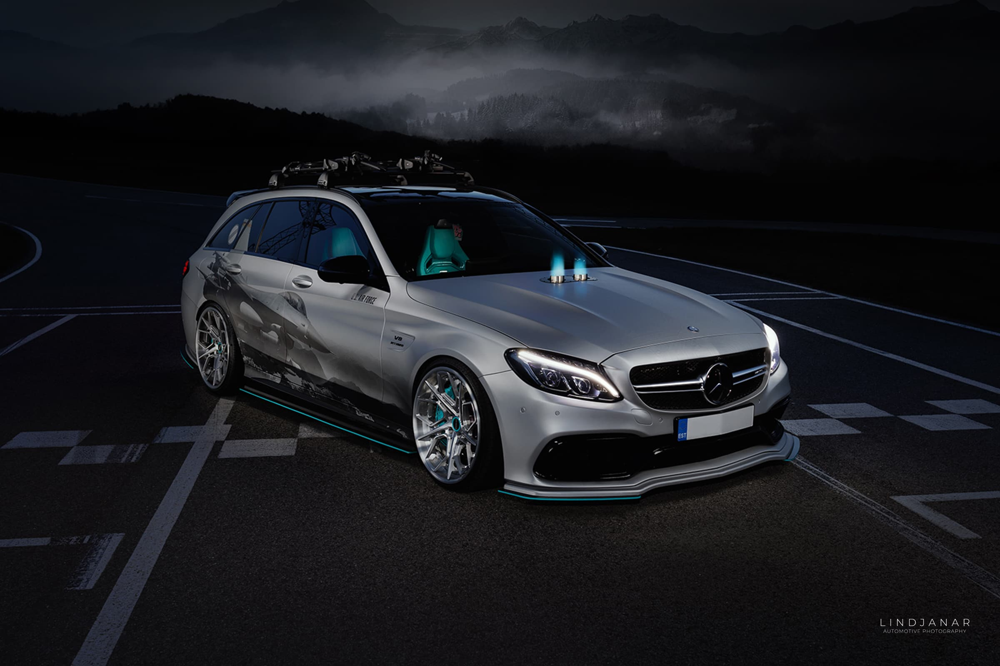
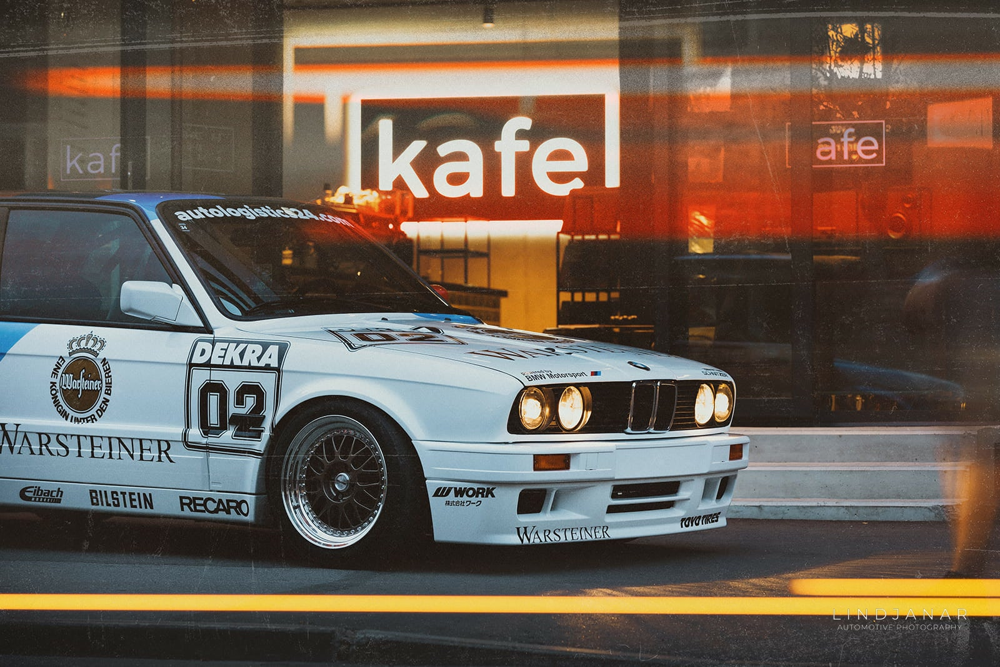
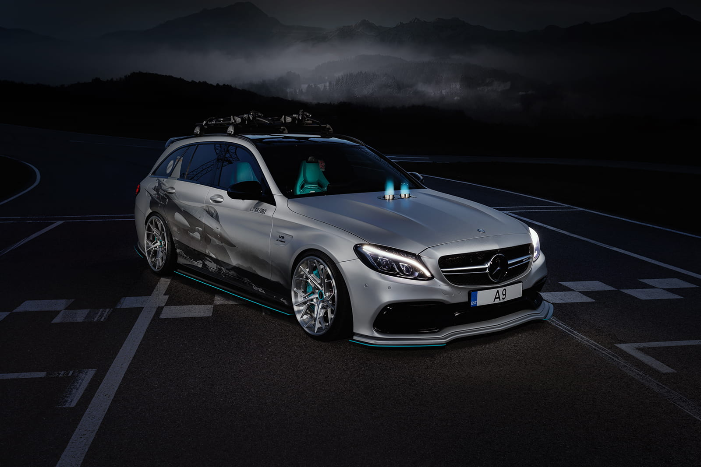
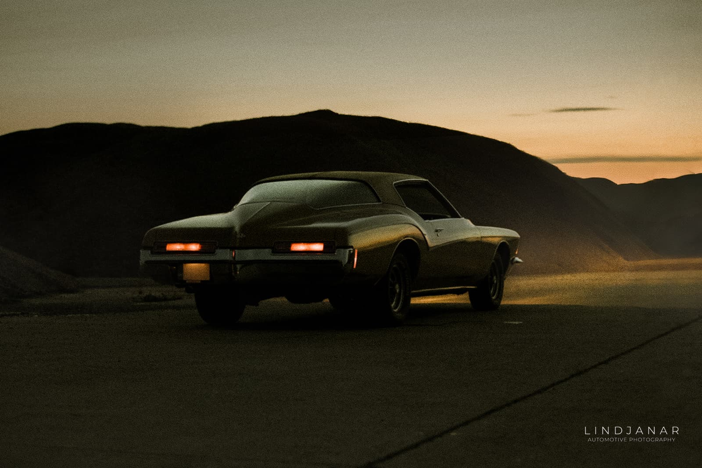
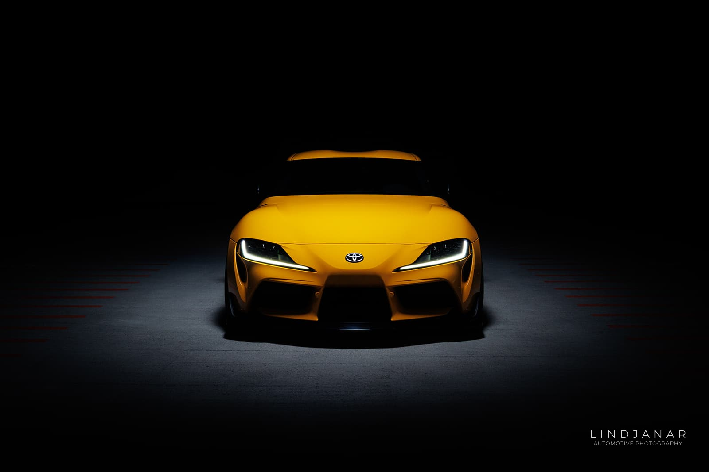
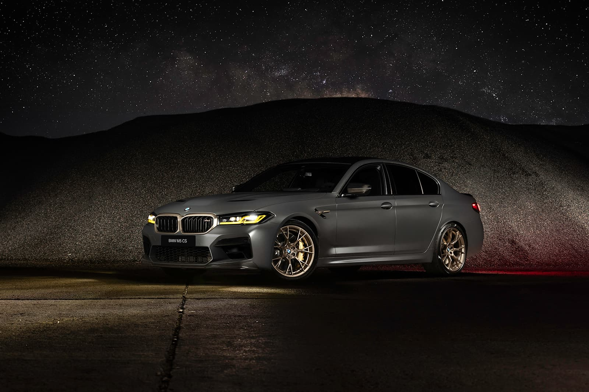
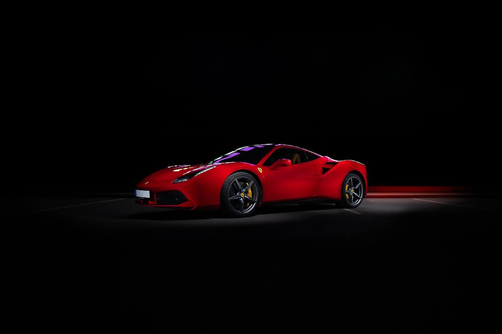
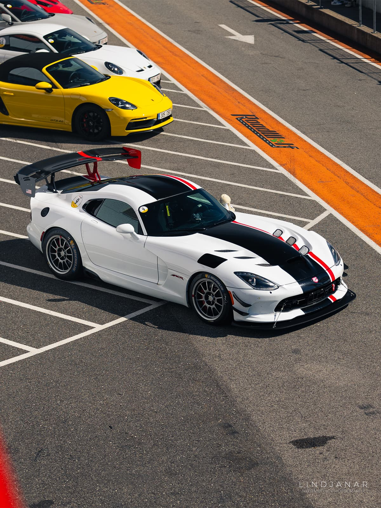
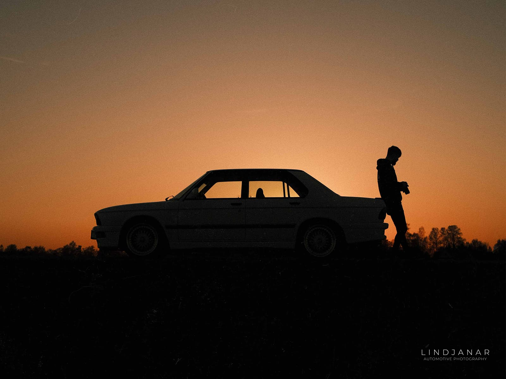

Projekti pealkiri üks
Lühike pealkiri — kampaania, klient või asukoht.

Projekti pealkiri kaks
Lühike pealkiri — kampaania, klient või asukoht.

Projekti pealkiri kolm
Lühike pealkiri — kampaania, klient või asukoht.

Projekti pealkiri neli
Lühike pealkiri — kampaania, klient või asukoht.

Projekti pealkiri viis
Lühike pealkiri — kampaania, klient või asukoht.

Projekti pealkiri kuus
Lühike pealkiri — kampaania, klient või asukoht.
Autofotograafia
Igal autol on viis, kuidas ta tahab olla pildistatud — joon, mis püüab valgust esimesena, asend, mis nõuab madalat nurka, värvus, mis ärkab ellu hämaruses. Töö on leida see kombinatsioon ja ehitada kaader selle ümber.
Kaubanduslikud kampaaniad, esindusmaterjalid ja turuletulekud, toimetuslikud lood ning entusiastide pildistamised üle Eesti, Baltikumi ja kaugemal.

Videograafia ja Liikumine
Autod on loodud liikumiseks. Kus fotod püüavad hetke, näitab film kaalu, heli ja tempot — viisi, kuidas auto tegelikult elab.
Saadaval täistootmiseks — režii, võte, monteerimine ja värvikorrektuur — või operaatorina suuremates meeskondades. Lühikesed brändifilmid, turuletuleku treilerid, sotsiaalmeedia lõikud ja pikemad dokumentaalteosed.
Töötlus
Iga kaader sellel saidil on läbinud töötluse — see on osa fotograafia töövoost, mitte eraldiseisev teenus. RAW-faile töödeldakse värvi ja kontrasti osas, häirivad elemendid eemaldatakse, taevad ja pinnad tasakaalustatakse ning auto tuuakse esile seal, kus seda vaja on.
Eesmärk jääb samaks: hoida foto ausana, kuid tagada, et miski ei tõmbaks pilku autolt ära. Lohista käepidet allpool, et võrrelda töötlemata kaadrit lõpliku pildiga.
Armastus Autode Vastu
Fotograafia algas autodest. Ammu enne esimest klienti olid autokohtumised, hilisõhtused sõidud ja kaamera, mis alati kaasas käis. See osa pole muutunud — ikka veel kasvab isiklik arhiiv projektiautodest, maanteereisidest ja stseenidest, mis ei jõua kunagi briifini.
Jälgi viimast Instagramis.

Võta Ühendust
Broneeringuteks, tellimusteks ja koostööks.
- E-post — hello@lindjanar.ee
- Telefon — +372 53053253
- Instagram — @lindjanar
- Täielik kontaktvorm →